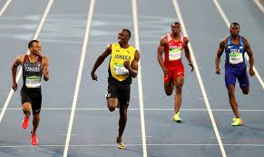

sprinting in the Olympics is a showcase of raw speed, power, and precision, where the world's fastest athletes compete to determine who is the quickest over short distances. These events, ranging from the 100 meters to the 400 meters, are among the most thrilling in track and field, with races often decided by fractions of a second. Olympic sprinters undergo rigorous training to perfect their technique, maximize their explosive strength, and refine their mental focus. The 100-meter dash, in particular, is a highlight of the Games, often earning the title of "the fastest person in the world" for its winner.
